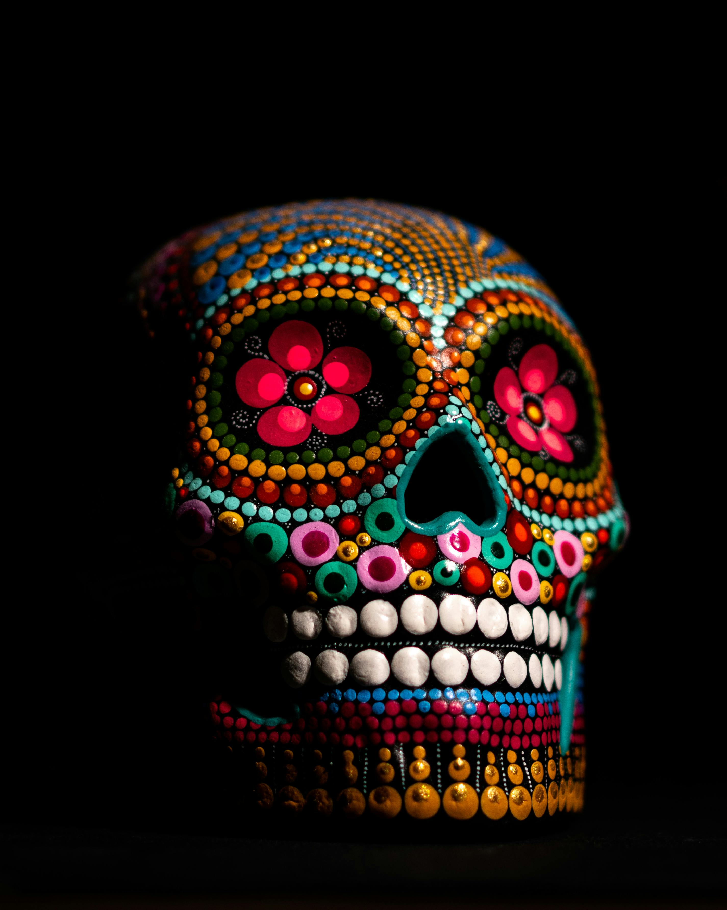

Explore a curated collection of timeless masterpieces from renowned artists around the world. This gallery features five iconic artworks that have shaped the history of art.
Jump to your favorite artwork:
Visit Collection of Artwork

This artwork presents a thought-provoking depiction of environmental protection and the importance of saving our
planet's water resources. The intricate paper art design showcases various elements of nature, including lush
greenery and flowing water, all crafted from delicate layers of paper.
The use of soft colors and intricate
details invites viewers to reflect on their relationship with the environment and the need for sustainable
practices.

This artwork depicts a hauntingly beautiful landscape, where the interplay of light and shadow creates a sense of
depth and mystery. The foreground is filled with delicate wildflowers, while the background features a dense
forest shrouded in mist.
The color palette is dominated by cool blues and greens, evoking a feeling of
tranquility and introspection. It's a stunning representation of nature's ethereal beauty.

This artwork captures the essence of urban life, showcasing a bustling city street filled with vibrant colors and
dynamic shapes. The use of bold lines and geometric patterns makecreates a sense of movement and
energy, inviting viewers to immerse themselves in the lively atmosphere.
It's a striking representation of
the modern metropolis and the creativity that thrives within it.
| Artwork | Artist | Medium | Year | Movement |
|---|---|---|---|---|
| Starry Night | Vincent van Gogh | Oil on canvas | 1889 | Post-Impressionism |
| The Persistence of Memory | Salvador Dalí | Oil on canvas | 1931 | Surrealism |
| The Great Wave off Kanagawa | Katsushika Hokusai | Woodblock print | 1831 | Ukiyo-e |
| The Scream | Johannes Vermeer | Oil on canvas | 1665 | Dutch Golden Age |
| Song of ice and fire | Edvard Munch | Oil, tempera, pastel | 1893 | Expressionism |
This virtual gallery was created to showcase iconic masterpieces from different art movements and time periods.
Thank you for visiting!
For more information, contact us at: info@virtualgallery.com